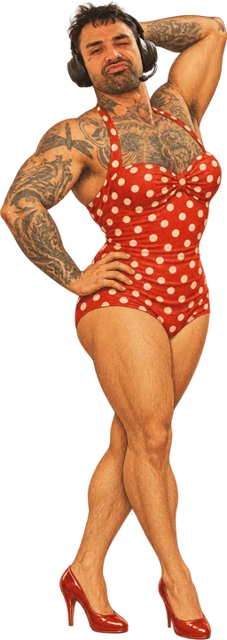

Overwatch keeps throwing Australian players into Asian servers. Then u play at 150 ping and every enemy Genji teleports around like hes got the shits and u die before u even see him.
PingSpace fixes that. It tells ur PC to block Overwatch from connecting to Asian servers, so the game has to put u on Sydney or Melbourne instead. U set it once and its done.
This page walks u through every single click. Go slow, do one step at a time and tick each box as u go.
On ur gaming PC, click this big pink button:
♥ DOWNLOAD PingSpace.exe ♥one file, about 13 MB, goes into ur Downloads folderIf ur browser has a cry about it ("isn't commonly downloaded" or "could harm your device"):
browsers lose their mind over any file that isnt from a billion dollar company. its fine. the code is public, anyone can read it.
now u can find it again next time instead of digging through 400 downloaded cracked minecraft mods.
Double-click PingSpace on ur Desktop.
The first time, Windows will probably show a big blue box like this:
this only shows up because i didnt pay microsoft $500 a year to be a "known publisher". i spent that money on eyeliner. u only see this box once.
Windows then asks if PingSpace can make changes. Click Yes.
It needs this because blocking servers means changing ur Windows Firewall, and Windows wont let anything touch the firewall without asking u first. It asks every time u open PingSpace. Always click Yes.
no its not mining crypto on ur rig. ur rig couldnt mine a minecraft block.
A window opens with glitter, my face everywhere and 8-bit music. This is what it's meant to look like. Ur PC is not haunted.

what u should see (plus music. theres a pause button on the left if it's too much)
Check one thing: scroll down a bit on the left to Details. Next to Overwatch.exe there should be some text that starts with C:\. That means it found ur game. Go to step 6.
If that box is empty, click [ find it ] and pick the Overwatch file. If u installed through Battle.net it's normally here:
C:\Program Files (x86)\Overwatch\_retail_\Overwatch.exe
Can't find it? Open Battle.net, click Overwatch, click the cog next to the Play button, then Show in Explorer. Open the _retail_ folder and pick Overwatch.
yes my face is the background. and the profile pic. and every one of ur top 8 friends. and its bouncing around the screen. u will get used to it. u will never get used to it.
Scroll down to Friend Space. The Asian servers (Singapore, Tokyo, Seoul, Taipei) already have a red BLOCKED stamp on them. That's what we want. Leave them.
Click the big pink ♥ BLOCK EM ♥ button.

Wait a few seconds. The box at the top goes green and says blocking Asia, ur safe now. Done.
congrats. u just ghosted an entire continent. sydney and melbourne can never be blocked, they're my besties, so u cant stuff this up.
If Overwatch was already open, close it fully and open it again. Then queue like normal.
U can close PingSpace now. The block stays on, even after u restart ur PC. U never have to open PingSpace again unless u want to undo it.
go enjoy 20 ping. ur aim is still dogshit but at least now its ur fault.
ur officially one of us now. there is no leaving.
Late at night there aren't many Aussies online, so it waits longer for a Sydney game instead of throwing u into Singapore. That's the trade. If u'd rather have a game now and don't mind the lag, open PingSpace and click unblock all. Block again later.
Sometimes the game still tries an Asian server, can't reach it and gives up. Just queue again. Its working, it's doing its job.
Most PCs already have this. If yours doesn't, go to Microsoft's WebView2 page, download the Evergreen Bootstrapper, run it, then open PingSpace again.
Small apps from regular people sometimes set off antivirus because nobody's heard of them. The full code is public on GitHub if anyone wants to check it. If ur unsure, message Ronnie before u do anything.
Click pause in the Music box on the left. It remembers, so it stays quiet next time. Coward.
PingSpace only changes ur own PC's firewall. It doesn't touch Overwatch's files, memory or anything inside the game. Blizzard hasn't said yes or no to tools like this though, so it's ur call. Use at ur own risk.
Take a photo of the screen and send it to Ronnie. Tell him which step number u got up to.